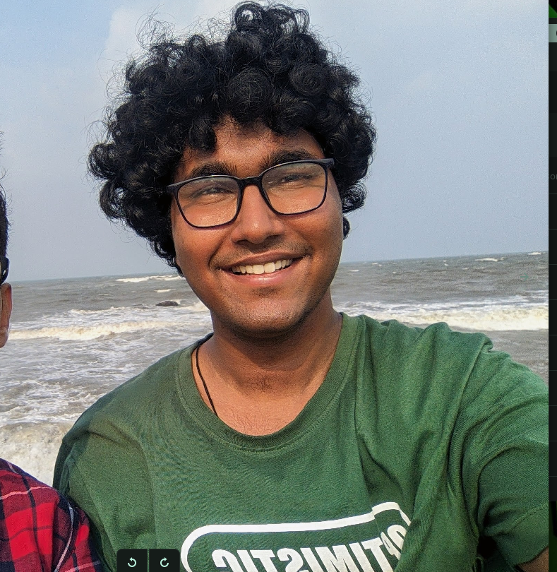

Hello, I'm Evan Ferrao
A passionate web developer and technology enthusiast focused on creating engaging digital experiences. Welcome to my portfolio where creativity meets functionality.

A passionate web developer and technology enthusiast focused on creating engaging digital experiences. Welcome to my portfolio where creativity meets functionality.
Hello! I'm Evan Ferrao, a passionate web developer and tech enthusiast. I specialize in creating interactive and user-friendly web experiences. With a strong foundation in modern web technologies, I strive to build applications that are both aesthetically pleasing and functionally robust.
My journey in web development started with a curiosity about how websites work. This curiosity evolved into a passion for creating digital experiences that leave a lasting impression. I constantly push myself to learn new technologies and improve my skills to stay at the forefront of this ever-evolving field.
I develop websites and web applications using the latest technologies in the industry. My expertise includes front-end development, responsive design, and creating intuitive user interfaces. I'm constantly learning and adapting to new tools and frameworks to stay ahead in this ever-evolving field.
I believe in clean, efficient code and user-centered design. Every project I undertake begins with understanding the end user's needs and tailoring the experience accordingly. I pay attention to details and ensure that every element serves a purpose. I like building random projects with my friends in my free time. Make sure to check out my github!
This methodical approach ensures that every project I work on is not only visually impressive but also functionally excellent and looks beautiful.